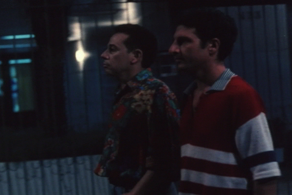

ÂNGELO ANDA SUMIDO (Ángelo Anda Desaparecido)
|
(35 mm, 17 min, color, 1997) Dos viejos amigos se reencuentran y quedan en cenar juntos, pero enseguida vuelven a perderse en el laberinto de rejas, cercas y muros de una gran ciudad. |
 Foto por Alex Sernambi: Antônio Carlos Falcão y Sérgio Lulkin |
{kind=link}
Dirección: Jorge Furtado
Producción Ejecutiva: Nora Goulart y Luciana Tomasi
Guión: Rosângela Cortinhas y Jorge Furtado
Dirección de Fotografía: Alex Sernambi
Dirección de Arte: Fiapo Barth
Música: Leo Henkin
Dirección de Producción: Leandro Klee
Montaje: Giba Assis Brasil
Asistente de Dirección: Amabile Rocha
Una Producción da Casa de Cinema PoA
Elenco Principal
Sérgio Lulkin (José)
Antônio Carlos Falcão (Ângelo)
Carlos Cunha Filho (vigilante en la guarita)
CRÉDITOS COMPLETOS
Premiaciones
- 25º Festival de Gramado, Cinema Latino y Brasileiro, 1997:
- Mejor dirección de arte, Premio especial para cortometraje gaúcho.
- 4º Vitória Cine Vídeo, 1997:
Mejor dirección de arte - 7ª Muestra Corto Cine, 1997:
Premio Adquisición Multishow. - 5º Festival de Cinema de Cuiabá, 1998:
Mejor guión. - 5º Cine Ceará, Fortaleza, 1998:
Premio Samburá (Mejor Película según la Federación de Cineclubes), Mejor Montaje, Mejor Banda Sonora. - 16° Festival Cinematográfico Internacional del Uruguay, Montevideo, 1998:
Menção especial.
Crítica
"Furtado retorna con ÁNGELO ANDA DESAPARECIDO, estudio sobre la paranoia urbana. La película llega a molestar por el realismo con que muestra a las personas irremediablemente separadas por rejas. Un bello trabajo."
(Luiz Zanin Oricchio, O Estado de São Paulo, 24/07/1997)
http://www.estado.estadao.com.br/edicao/pano/97/07/23/ca2309.html
"Dirigido pelo festejado Jorge Furtado, ANGELO ANDA SUMIDO começa muito bem mas tem desfecho brusco e pouco impactante, o que é um pecado mortal para um curta-metragem. (...) É claro que não faltam momentos de brilhantismo, como os ótimos diálogos criados por Furtado e a ótima montagem de Giba Assis Brasil. Ainda assim, trata-se de um Furtado menor."
(Paulo Camargo, Gazeta do Povo, Curitiba, 11/08/1997)
"ANGELO ANDA DESAPARECIDO es una bien humorada crónica urbana con tintes kafkaianos sobre la odisea de un tipo que sale de casa para cenar con un amigo (el Ángelo del título) y se ve involucrado en la selva de rejas que se convirtió la ciudad. La película despertó reacciones entusiasmadas de la platea durante la proyección y un aplauso tibio al final. Para el director, eso pasó porque el final es deliberadamente anticlimático: 'La película no acaba, ella se afina'. Es verdad. El interés del público se ve atraído para una cosa (¿qué le pasó a Ángelo?) que la película no muestra, para recalcar el individualismo del protagonista. Opción valiente de una película que describe un mundo en que, según las palabras del director, 'el individuo, cuando enfrenta el espacio público, quiere tener el menor contacto posible con el otro'."
José Geraldo Couto, Folha de São Paulo, 11/08/1997)
"Es curiosa la trayectoria del cineasta riograndense Jorge Furtado. Después de proyectarse internacionalmente con el corto ensayístico ISLA DE LAS FLORES (1989), dejó que otros repitiesen su fórmula hasta el agotamiento y rumbó a otra cosa: la experimentación de nuevas estructuras narrativas. En ÁNGELO ANDA DESAPARECIDO (...) hay una tensión sorda entre lo que entra en la película como si fuera por acaso - la basura en la calle, los mendigos, la charla disparatada de porteros y taxistas, el deterioro urbano - y la trayectoria individualista y banal del protagonista, que sólo pretende comer y volverse a su casa. (...) 'El otro' (sea el portero, los mendigos, el taxista, el vigilante, e incluso su amigo Ángelo) son solo apenas un estorbo del cual el protagonista necesita librarse. Saca toda su fuerza de ese enfrentamiento entre el capullo individual y la realidad hostil del espacio otrora público, Jorge Furtado invierte en una opción osada y casi suicida de final: la ausencia de desenlace como demostración del teorema de que 'el otro' sólo estorba al protagonista. La odisea urbana termina cuando éste come un prosaico perro caliente - hot dog."
(José Geraldo Couto, Folha de São Paulo, 22/08/1997)
"Depois de tantos curtas 'comédia da vida privada', o público cearense pôde ver uma obra do verdadeiro criador da linguagem, o não presente cineasta Jorge Furtado. ANGELO ANDA SUMIDO foi, como não poderia deixar de ser, bem recebido pelo público. É, de fato, melhor do que as imitações."
(Renata Gomes, O Povo, Fortaleza, 02/06/1998)
09/08/1997